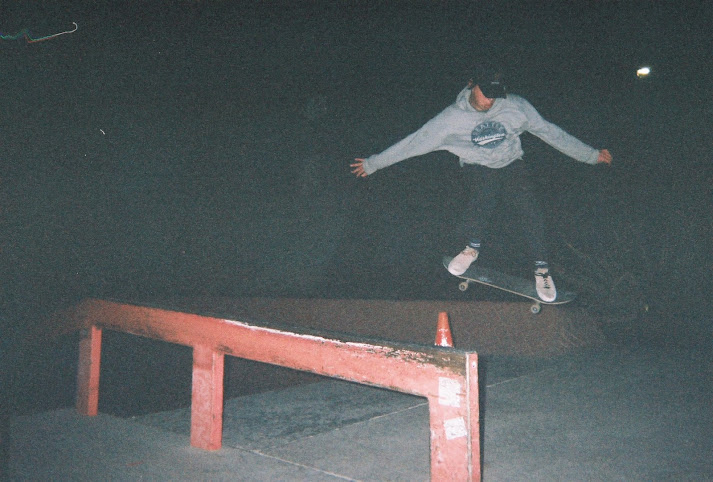
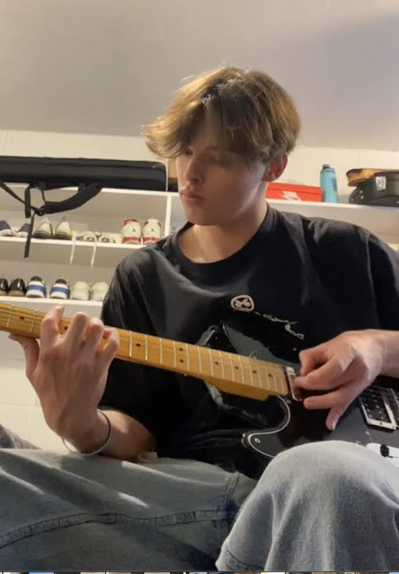
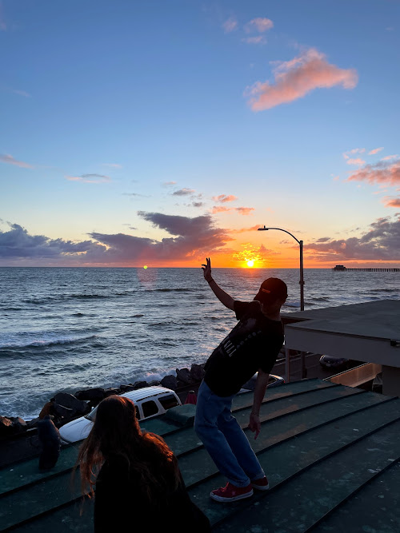

Accomplishments and Hobbies
I am from San Diego, California. I am a very outdoorsy person meaning I love to camp, surf, snowboard, play guitar, collect vintage, skateboard and hike. Me and my friends will often make little weekend trips to take cool pictures and try out new things together.
Being a member of The Church of Jesus Christ of Latter Day Saints, I was given the oppurtunity to participate in the Boy Scouts Program. This provided a major impact on my intrest in the outdoors and taking trips as I was given the oppurtunity to go on campouts and to visit some very unique places. I was also able to learn useful skills and lessons and I achieved the rank of Eagle Scout which has been useful in all aspects of my life.
Since moving up to Provo, UT for school at BYU, I have really gotten into progressing my guitar skills as I have seen lots of bands play and I hope to be able to play in one someday.
I have also started to learn how to snowboard since coming to Utah. Check out this video of me falling on a large jump here! (hopefully I will be able to get it next time)
What the Future has in Store for Me
My short term goal is to get accpeted into BYU from the flex-GE program and then from there be accepted into the Marriot School of Buisness. Once there, I would like to learn the ins and outs of running a buisness. Then after graduating, I would like to start my first buisness likley out of Saint George, Utah where I will create and market a vintage store and sell clothing and other unique items there because there is no competition in the area at the momement. From there, I would like to work on establishing a brand and branch it out into global brand that can be run remotely online
Once I have established my online brand, I plan on moving to Bali and running my buisness from there because it is my dream place to live.
“Life is either a daring adventure or nothing at all” ~ Helen Keller Live life to the fullest by chasing sunsets